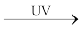

7.19 Chlorine
Chlorine was discovered in 1774 by Scheele by the action of HCl on MnO2. In 1810 Davy established its elementary nature and suggested the name chlorine on account of its colour (Greek, chloros = greenish yellow).
Preparation
It can be prepared by any one of the following methods:
(i) By heating manganese dioxide with concentrated hydrochloric acid.
MnO2 + 4HCl → MnCl2 + Cl2 + 2H2O
However, a mixture of common salt and concentrated H2SO4 is used in place of HCl.
4NaCl + MnO2 + 4H2SO4 → MnCl2 + 4NaHSO4 + 2H2O + Cl2
(ii) By the action of HCl on potassium permanganate.
2KMnO4 + 16HCl → 2KCl + 2MnCl2 + 8H2O + 5Cl2
Manufacture of chlorine
(i) Deacon’s process: By oxidation of hydrogen chloride gas by atmospheric oxygen in the presence of CuCl2 (catalyst) at 723 K.
(ii) Electrolytic process: Chlorine is obtained by the electrolysis of brine (concentrated NaCl solution). Chlorine is liberated at anode. It is also obtained as a by–product in many chemical industries.
Properties
It is a greenish yellow gas with pungent and suffocating odour. It is about 2-5 times heavier than air. It can be liquefied easily into greenish yellow liquid which boils at 239 K. It is soluble in water.
Chlorine reacts with a number of metals and non-metals to form chlorides.
2Al + 3Cl2 → 2AlCl3; P4 + 6Cl2 → 4PCl3
2Na + Cl2 → 2NaCl; S8 + 4Cl2 → 4s2Cl2
2Fe + 3Cl2 → 2FeCl3;
It has great affinity for hydrogen. It reacts with compounds containing hydrogen to form HCl.
With excess ammonia, chlorine gives nitrogen and ammonium chloride whereas with excess chlorine, nitrogen trichloride (explosive) is formed.
8NH3 + 3Cl2 → 6NH4Cl + N2 ; NH3 + 3Cl2 → NCl3 + 3HCl
(excess) (excess)
With cold and dilute alkalies chlorine produces a mixture of chloride and hypochlorite but with hot and concentrated alkalies it gives chloride and chlorate.
2NaOH + Cl2 → NaCl + NaOCl + H2O
(cold and dilute)
6 NaOH + 3Cl2 → 5NaCl + NaClO3 + 3H2O
(hot and conc.)
With dry slaked lime it gives bleaching powder.
2Ca(OH)2 + 2Cl2 → Ca(OCl)2 + CaCl2 + 2H2O
The composition of bleaching powder is Ca(OCl)2.CaCl2.Ca(OH)2.2H2O.
Chlorine reacts with hydrocarbons and gives substitution products with saturated hydrocarbons and addition products with unsaturated hydrocarbons. For example,
CH4 + Cl2  CH3Cl + HCl
Methane Methyl chloride
C2H4 + Cl2 C2H4Cl2
Ethene 1,2-Dichloroethane
Chlorine water on standing loses its yellow colour due to the formation of HCl and HOCl. Hypochlorous acid (HOCl) so formed, gives nascent oxygen which is responsible for oxidising and bleaching properties of chlorine.
(i) It oxidises ferrous to ferric and sulphite to sulphate. Chlorine oxidises sulphur dioxide to sulphur trioxide and iodine to iodate. In the presence of water they form sulphuric acid and iodic acid respectively.
2FeSO4 + H2SO4 + Cl2 → Fe2(SO4)3 + 2HCl
Na2SO3 + Cl2 + H2O → Na2SO4 + 2HCl
SO2 + 2H2O + Cl2 → H2SO4 + 2HCl
I2 + 6H2O + 5Cl2 → 2HIO3 + 10HCl
(ii) It is a powerful bleaching agent; bleaching action is due to oxidation.
Cl2 + H2O → 2HCl + O
Coloured substance + O → Colourless substance
Uses: It is used (i) for bleaching woodpulp (required for the manufacture of paper and rayon), bleaching cotton and textiles, (ii) in the extraction of gold and platinum (iii) in the manufacture of dyes, drugs and organic compounds such as CCl4, CHCl3, DDT, refrigerants, etc. (iv) in sterilising drinking water and (v) preparation of poisonous gases such as phosgene (COCl2), tear gas (CCl3NO2), mustard gas (ClCH2CH2SCH2CH2Cl).
Example 7.17
Write the balanced chemical equation for the reaction of Cl2 with hot and concentrated NaOH. Is this reaction a disproportionation reaction? Justify.
Solution
3Cl2 + 6NaOH → 5NaCl + NaClO3 + 3H2O
Yes, chlorine from zero oxidation state is changed to –1 and +5 oxidation states.